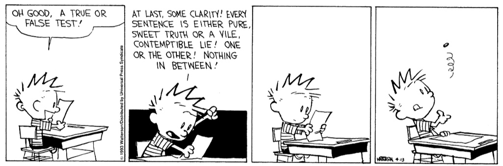

Andrej Jovićević

I am an undergraduate student in Philosophy at KU Leuven (Belgium). My areas of interest and research include philosophical logic, (modal) metaphysics, formal epistemology, philosophy of language and formal semantics, among others. I'm deeply inspired by the use of formal/mathematical methods in philosophy. In terms of logic and mathematics, I have special interests in modal logic, higher-order logic, type theory, algebraic logic, and category theory.
Publications
• A Semantics for Weak, Question-Sensitive Belief (2024) [Abstract]
24th Amsterdam Colloquium
Recent work in epistemology defends the unorthodox theses that belief is (1) an evidentially weak, and (2) question-sensitive attitude, and (3) that forming beliefs is sometimes a matter of guessing. What motivates these theses are examples of rationally permissible belief-ascriptions that exhibit these traits. The main aim of this paper is to outline a semantic account of categorical and conditional belief-ascriptions that captures the motivating data. We then survey some consequences of the proposed semantics, particularly with respect to the question of whether closure under rules of inference is rationally required for weak, question-sensitive belief.
In Progress
• There is no Sufficiently Weak Being Constraint [Abstract]
Under Review—Comments welcome!
By a familiar argument, contingentists cannot accept both the Being Constraint and the principle of λ-Abstraction, on pain of necessitism. Given the wide endorsement and intuitive plausibility of these two principles, contingentists might be faced with an unpalatable choice. A plausible way out for contingentists is weakening the Being Constraint so that the argument for necessitism fails to go through. This article considers the prospects of such a strategy. The article has two aims: First, I schematise the weakening strategy and situate two kinds of weakening proposed in the literature within this schema; Second, I propose two arguments for necessitism that go through even on the weakened version of the Being Constraint. I conclude that this should shake our confidence in there being a sufficiently weak Being Constraint.
• Aboutness and Higher-Order Contingentism [Abstract]
In progress (Email for draft)
Higher-order contingentism is often motivated by constraints on what it takes for properties and propositions to exist, where the constraints involve the existence of first-order entities. A plausible strategy maintains that, provided a property or proposition is about some individual, it fails to exist at worlds at which the individual fails to exist. However, extending this strategy beyond examples requires a general theory of aboutness for entities of higher types. This article looks at two extant approaches to aboutness—the fine-grained structured approach and the coarse-grained Lewisian approach—and the higher-order contingentist accounts thereby motivated. I argue
• Fictionalism and Counterpossibles [Abstract] [Extended Abstract]
In progress (Email for draft)
A strand of nominalist fictionalism about mathematics captures the truth conditions of mathematical statements by counterfactually supposing the existence of abstract objects. Provided nominalism holds of necessity, the resulting counterfactuals are counterpossibles. On the orthodox semantics for counterfactuals, counterpossibles are vacuously true. Adopting the orthodox semantics for counterfactuals thus trivialises counterfactualist fictionalism. This article outlines a novel variant of counterfactualist fictionalism that is not trivialised by the orthodox semantics.
Talks
A Semantics for Weak, Question-Sensitive Belief [Poster]
- 24th Amsterdam Colloquium, ILLC, Amsterdam (The Netherlands) Dec 2024
Aboutness and Higher-Order Contingentism [Handout]
- Salzburg Conference for Young Analytic Philosophy 2024, University of Salzburg (Austria) Sep 2024
Fictionalism and Counterpossibles [Handout]
- Conference on the Philosophy of Mathematical Practice, Vrije Universiteit Brussel (Belgium) Jun 2024
- 34th Novembertagung on the History and Philosophy of Mathematics,
Mathematical Institute of the Serbian Academy of Arts and Sciences (Serbia) Nov 2024
Misc.
In the 2024/25 academic year, I am organizing a two-semester reading group in formal epistemology, focusing on iteration principles for knowledge. [Reading List]
Contact
E-mail: andrej.jovicevic@student.kuleuven.be
Address: Hogeschoolplein 3, Leuven, Belgium
Links
CV
PhilPapers